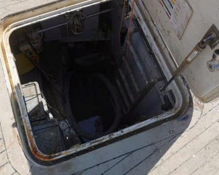
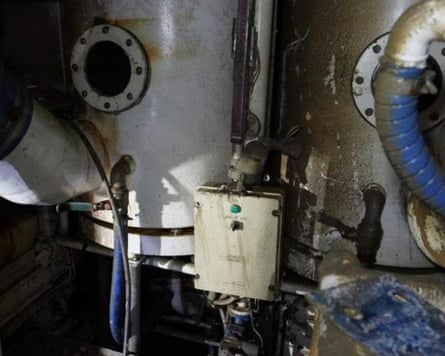

The first images of the inside of the superyacht Bayesian, which sank in a storm off Sicily last year killing seven people including the tech tycoon Mike Lynch and his teenage daughter, have emerged in Italian media.
The hulk of the 56-metre (184ft) vessel was raised from the seabed near Porticello last week and taken to the port of Termini Imerese, where it is being examined by investigators working to determine how and why it sank.
Four photographs, obtained by Italy’s state broadcaster, Rai, show the damage done to the Bayesian and its once-luxurious interior. One of the boat’s reception areas is mud-soaked, cluttered and ruined, its upholstered sofas and chairs torn and stained.
Bayesian exterior.Photograph: TG/RAINEWS
Another shows an open hatchway leading down from the deck, while a side view of the hull and one of the vessel’s propellers reveals some of the mud that accumulated during its 10-month spell beneath the waves.
The Bayesian was anchored near the port of Porticello when it sank during a violent storm shortly before dawn on 19 August 2024. Lynch had been enjoying a voyage around Sicily with his family and some friends celebrating his acquittal in a long-running fraud case regarding the sale of the technology company he founded, Autonomy, to Hewlett-Packard in 2011.
Lynch and his 18-year-old daughter, Hannah, died, as did a lawyer, Chris Morvillo, and his wife, Neda; Jonathan Bloomer, a banker, and his wife, Judy; and the yacht’s chef, Recaldo Thomas. Nine other crew members and six guests were rescued.
A hatchway leading down from the deck of the Bayesian.Photograph: TG/RAINEWS
Investigators hope the yacht will yield clues to the causes of the sinking. A forensic examination will seek to determine whether one of the hatches remained open and whether the keel was improperly raised.
According to a preliminary safety report released last month by the UK’s Marine Accident Investigation Branch (MAIB), the Bayesian may have been vulnerable to high winds when running on its engine. These “vulnerabilities” were “unknown to either the owner or the crew” as they were not included in the stability information book onboard.
The MAIB said a possible “tornadic waterspout” headed towards the boats in the harbour. The docks seemed to divert the whirlwind, which went straight towards the Bayesian, and the vessel sank within a few seconds.
Prosecutors have opened an inquiry into suspected manslaughter. The boat’s captain, James Cutfield, from New Zealand, and two British crew members, Tim Parker Eaton and Matthew Griffiths , have been placed under investigation. In Italy, this does not imply guilt or mean that formal charges will necessarily follow.
The family of Thomas, a Canadian-Antiguan national, have said they were waiting to see what the MAIB experts found.
Damaged equipment inside the Bayesian.Photograph: TG/RAINEWS
“Lessons need to be learned from this tragedy, as well as establishing the truth of what happened and bringing those responsible to justice,” said James Healy-Pratt, a partner at Keystone Law, which is representing the Thomas family.
Inquest proceedings in the UK are looking at the deaths of Mike and Hannah Lynch as well as those of Jonathan and Judy Bloomer.
The complex operation to salvage the Bayesian was temporarily suspended in mid-May after Rob Cornelis Maria Huijben , a 39-year-old Dutch diver, died during underwater work.
Additional reporting Lorenzo Tondo